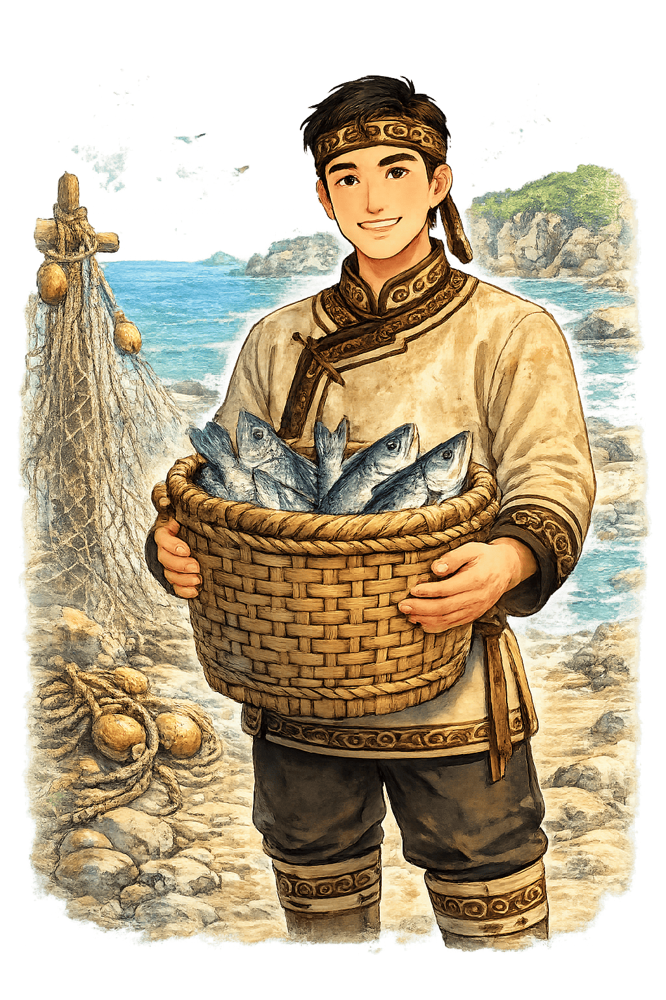
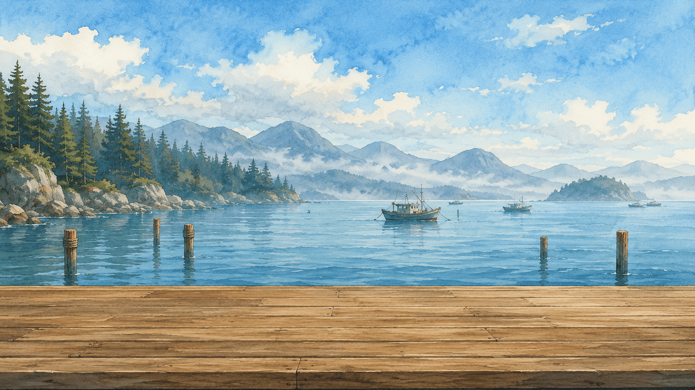
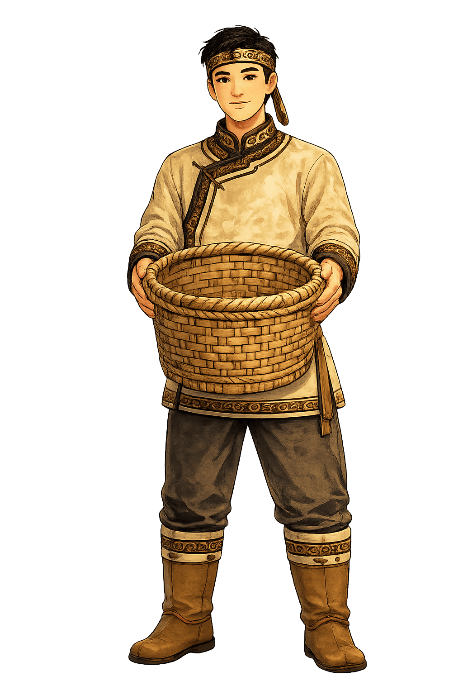
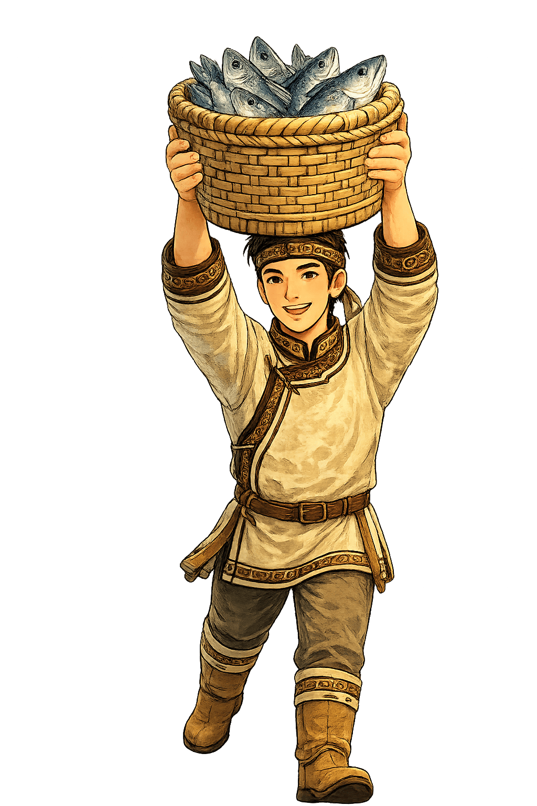

Игра народов Дальнего Востока
Большой улов
Рыба выпадает из сачков сверху. Беги по пристани и лови её в корзину, пока улов не уплыл обратно в море.
Время
45
Поймано
0
Упало
0/3


Управление: стрелки ← →, A/D или кнопки на экране.
Результат
Игра завершена

Попробуй ещё раз и собери большой улов.
На Дальнем Востоке рыболовство издавна было важной частью жизни прибрежных народов. Рыбу ловили, сушили и заготавливали впрок для семьи и долгих переходов.
Как играть
Помоги рыбаку Дальнего Востока поймать рыбу, которая выпадает из сачков сверху.
- Нажми «Начать игру».
- Передвигай рыбака влево и вправо стрелками ← → или клавишами A/D.
- На телефоне используй кнопки управления снизу.
- Смотри на сачки сверху: когда в сачке появляется рыба, она скоро упадёт вниз.
- Подставляй корзину под падающую рыбу, чтобы поймать её.
- Если несколько рыб упадут мимо — игра закончится.
- Поймай нужное количество рыбы до окончания времени.
Следи за сачками и быстро меняй позицию рыбака, чтобы собрать большой улов!